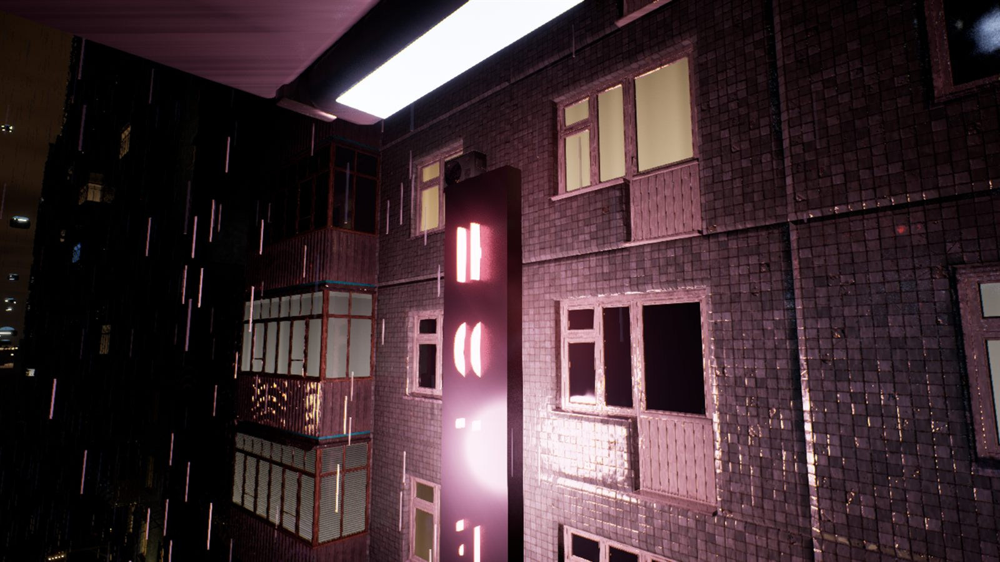
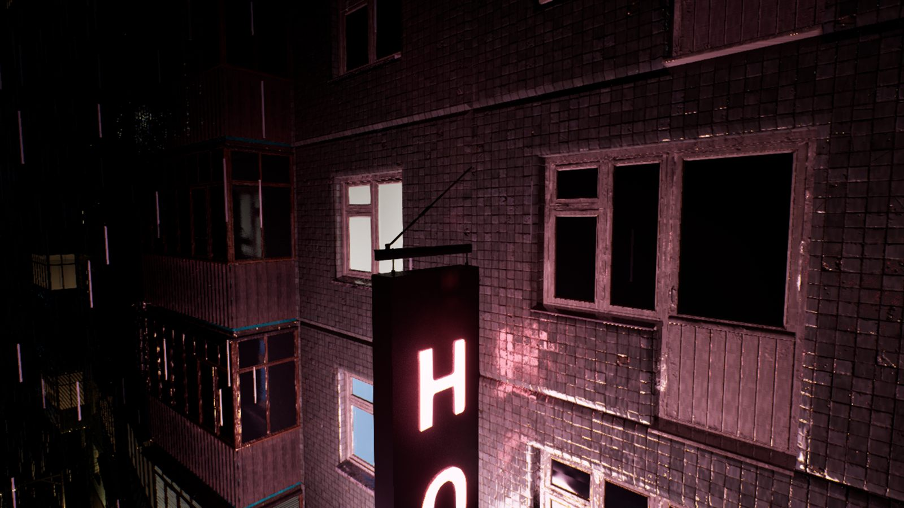
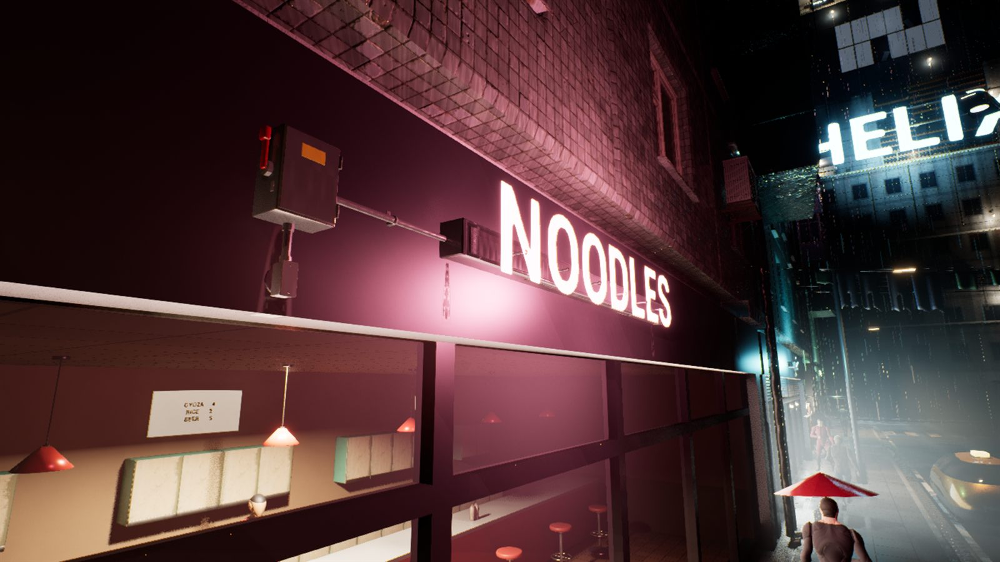
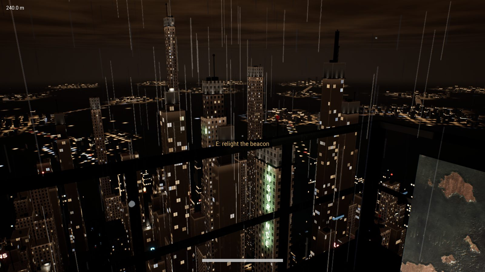
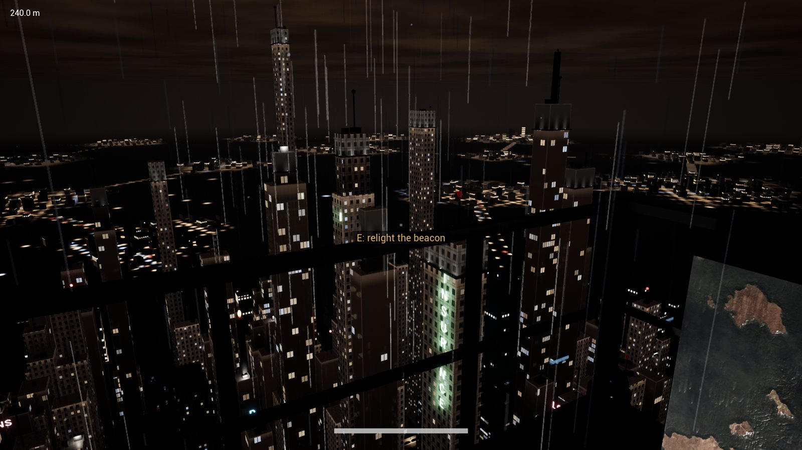
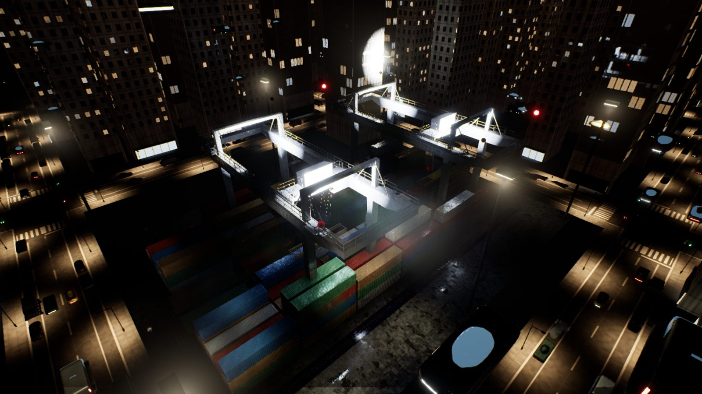

Signs fixed to the buildings, and the light changes as I climb
The street's signs were neon words floating in front of the walls. Now each is hardware fixed to its building: shop signs on a raceway with a transformer beside it and conduit running to a red-handled switch, blade signs hung from an arm and a tie rod, and rust running down from the fixings.
- The colour of the picture shifts with height: warmer in the street's smog, cooler and crisper above it, and cool and clear at the top.
- Up the tower the rain was a white curtain: on the podium roof I could barely see the lift. Now I can see through it, and it still reads as heavy rain.
- In my playtest I couldn't find the street I'd started on from the top of the mast. Now it's lit all the way along, a line of light running away from the tower.
- The container yard below the mast has a railway: a train of container wagons under the cranes, and a line leaving over level crossings into a tunnel.
- The ladder rungs are real round steel bars, worn bright where hands and feet go and rusted at the ends.





